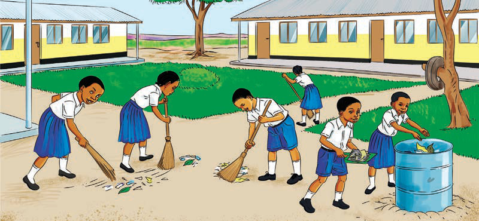

FOR ONLINE READING ONLY
(f) Kuthamini mali za shule na kuepuka vitendo vya rushwa vinavyolenga kuharibu na kupoteza mali za shule;
(g) Kutoa taarifa zinazohusu uharibifu na upotevu wa mali za shule;
(h) Kuwapenda wanafunzi wenzake na watu wengine shuleni;
(i) Kuwasaidia walimu, watu waliokuzidi umri na wanafunzi wengine shuleni pale inapohitajika;
(j) Kuwatii walimu, viongozi na wafanyakazi wengine waliopo shuleni;
(k) Kuwaheshimu walimu, waliokuzidi umri na wanafunzi wengine; na
(l) Kufanya usafi wa mazingira ya shule na darasani (chunguza Kielelezo namba 3).

Kuacha kutimiza wajibu wako shuleni ni kinyume na vitendo vya kimaadili. Unapaswa kutambua kuwa kutimiza wajibu ni jambo la lazima uwapo shuleni.